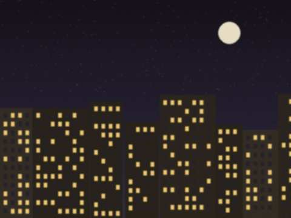
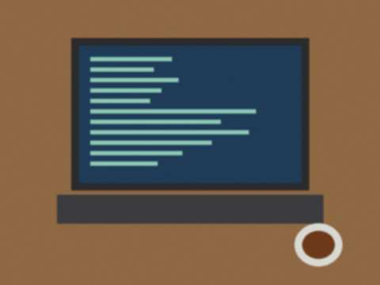

Saturday, April 12th, 2014 · 8:20 pm
Sorry for the silence. The National Graduation Test is in May and my mother has put my computer on top of the cupboard. Her exact words: "when you pass the test the machine comes down".
League news: the bracket on the wall has not moved. Dilshat-aka says the Lagers asked to play a "summer friendly". I said maybe in July. The Lagers are on the internet all day, they don't need a friendly.
Saturday, February 8th, 2014 · 11:55 pm

The back room at midnight. 30 people watching 10 monitors. You cannot see the floor.The final was played on a big monitor that Dilshat-aka took from a dead computer in the shop. 31 people in a room for 14 people. A grandmother came in to buy a charger and stayed until the end (she supported Misgaron, because her grandson plays there).
Result: 16-13, MISGARON BOYS. The captain got the copper cup. He hit it with a spoon, it sounded good. Then he hit it with a bigger spoon and put a dent in it. It is now the OFFICIAL dent.
Thank you to everybody. Season 2 in December. The bracket will stay on the wall until then, please nobody wash it.
Saturday, January 18th, 2014 · 9:40 pm
Semifinal 1 was great. Semifinal 2 was 11-11 when the light went out. All the monitors, the fans, the helicopter. 4 minutes in the dark. Somebody turned on the phone flashlight, somebody started to sing the anthem of Temir-Kapka, which is not an anthem, it is a song about a goat.
Dilshat-aka found the fuse. Light came back, the game was restarted from the same round (we trust each other, mostly), and Temir-Kapka won by one round. The Lagers say it is not fair. Of course it is not fair, it is a LAN in the Old City.
Saturday, December 21st, 2013 · 11:10 pm
Short results.
- Misgaron Boys 16-7 Sarchashma United
- Temir-Kapka 5 16-14 The Lagers (OVERTIME, my heart)
- Citadel Rush 16-3 Kalan Darwaza. Sorry Kalan Darwaza. Come back next week.
A boy from Kalan Darwaza started crying when he lost the last round on dust2. We made him tea. Then the Citadel Rush captain also made tea, then the whole room was drinking tea. A strange tournament.
Saturday, December 7th, 2013 · 10:30 pm

The back room of Kashkar before anybody comes. 14 monitors, 14 chairs, 1 fan that sounds like a helicopter.OK people. After 3 weeks of arguing about the rules in the shop, the Old City CS 1.6 League is real. Dilshat-aka said yes, he will give us the LAN on Friday and Saturday nights from 20:00 and the winter is ours. Entry is free, you only pay the normal hourly price (5 som). Night pass 18 for those who want to stay until 7.
8 teams, 5 players each, starting 20 December. Registration is in the shop on a sheet of paper from my school notebook. Names so far:
- Misgaron Boys (the copper street kids, scary)
- Temir-Kapka 5
- Sarchashma United
- Citadel Rush
- Kalan Darwaza
- The Lagers (from the new buildings, they have ADSL at home, so we hate them)
- two more spots. Hurry up.
Prize: a cup. A copper cup from the Misgaron guys. Not gold. But copper is better because it sounds good when you hit it with a spoon.